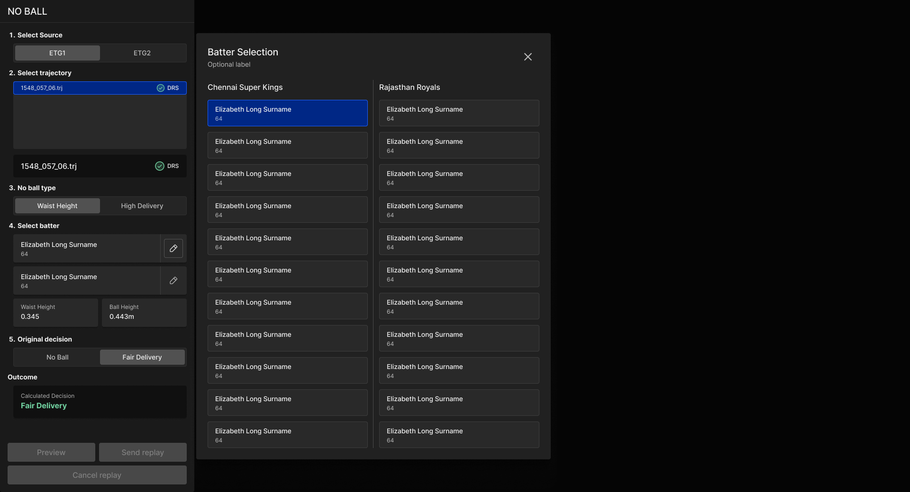
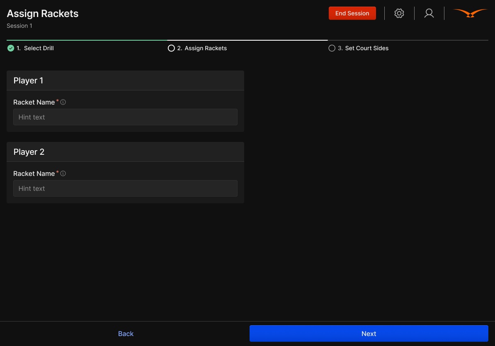
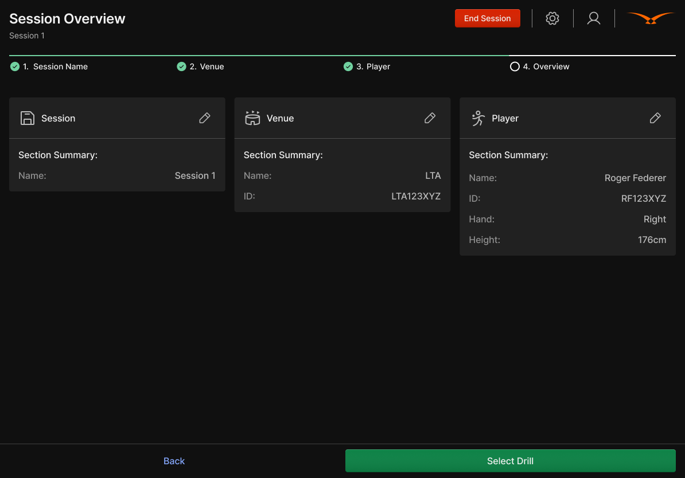
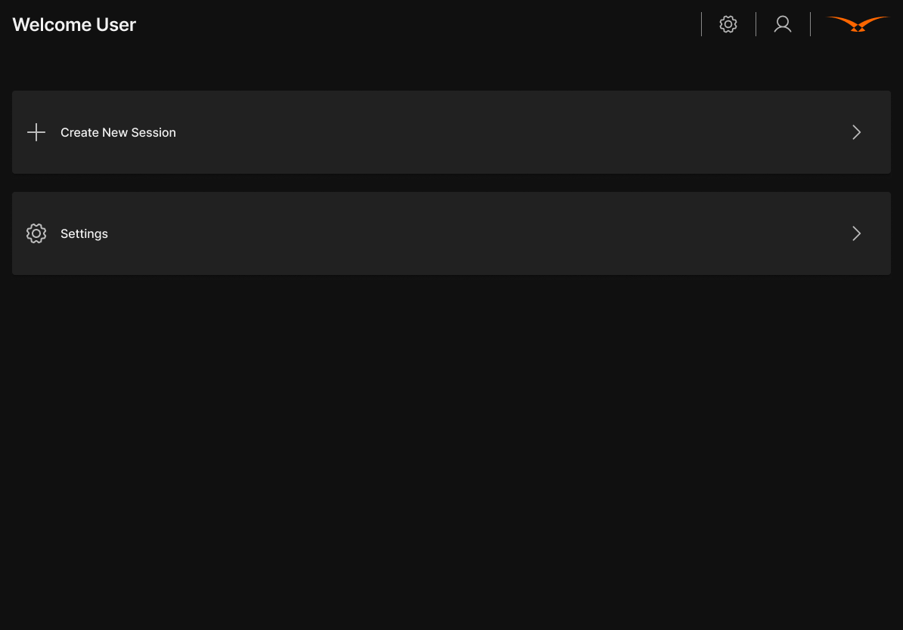
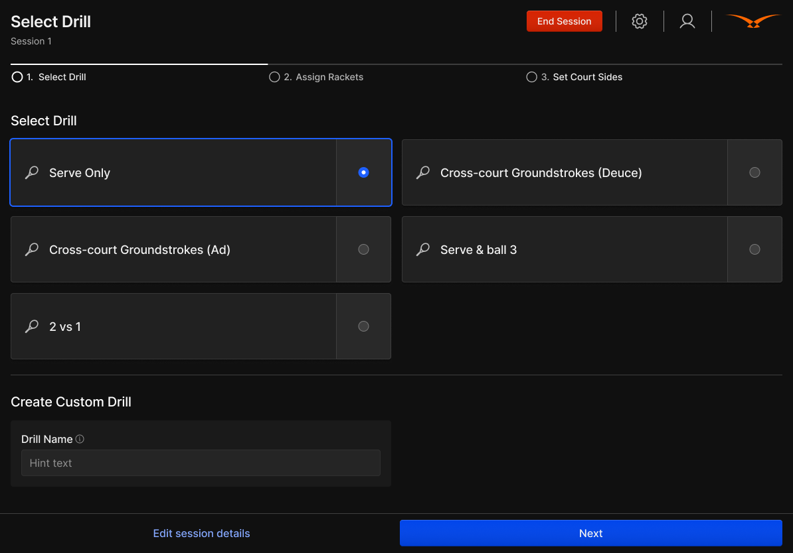
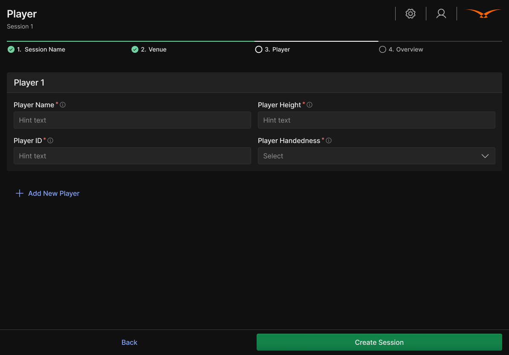
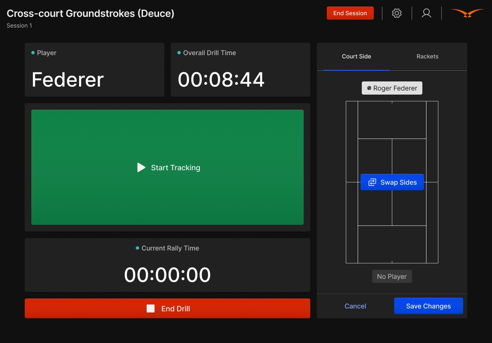
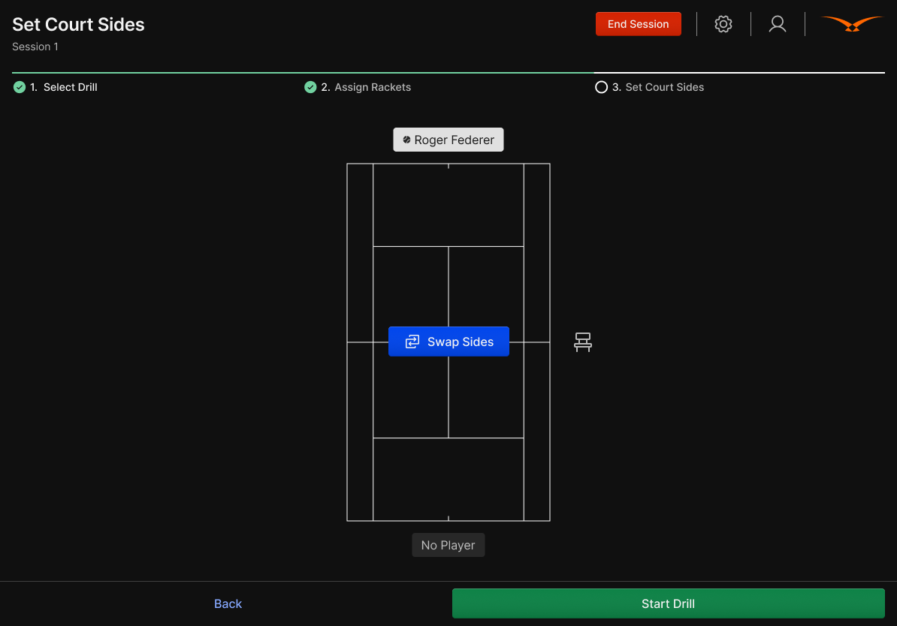
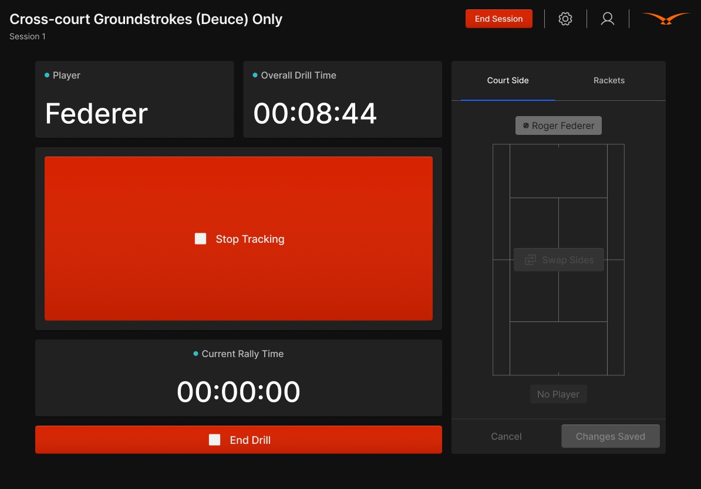

Status API feed tool for managing live games and reporting data issues.
CricketNo-ball review panel, since deployed in the IPL (Indian Premier League).
TennisTablet logging tool for coaches and players at training facilities.
Designing for the world's biggest sporting moments.
During my placement year at Hawk-Eye Innovations, a global sports technology company, I worked as a UX/UI Designer — helping design digital products used in professional sports, turning complex data and tracking systems into clear and easy-to-use interfaces.
I worked closely with product managers and developers to understand user needs, create wireframes and prototypes, and improve designs through testing and feedback. This experience helped me learn how to design practical, user-focused solutions while working within real technical and business constraints.
Basketball Status API Feed Tool
A tool that allows operators to manage the status of live basketball games and report data issues in real time. The challenge was designing an interface that supports quick updates while minimising disruption to ongoing live operations.


Small decisions matter when every game is live.
This project reinforced the importance of designing for efficiency in operational environments. Small decisions such as keeping users in context and reducing navigation can have a significant impact when users are managing multiple live events simultaneously.
Cricket "No Ball" Review Panel
As part of the existing cricket review system, I designed a dedicated panel for processing no-ball reviews during live matches. Operators needed to complete a series of decisions before submitting the replay — selecting the delivery, identifying the no-ball type, choosing the batter, and confirming the original umpire decision. The primary challenge was ensuring the process remained simple and reliable under live broadcast conditions.

Deployed in the IPL.
The final design was incorporated into the cricket review workflow and has since been deployed in the IPL (Indian Premier League).
Tennis Logging Tool
A tablet-based logging tool for coaches and players at training facilities. The product needed to support session setup, player configuration, drill selection, and live tracking — while remaining simple enough to use courtside during an active practice session.








A focused tool for a fast-paced coaching environment.
The final design provided a structured workflow for configuring training sessions while keeping the active tracking experience focused and easy to operate in a fast-paced coaching environment.